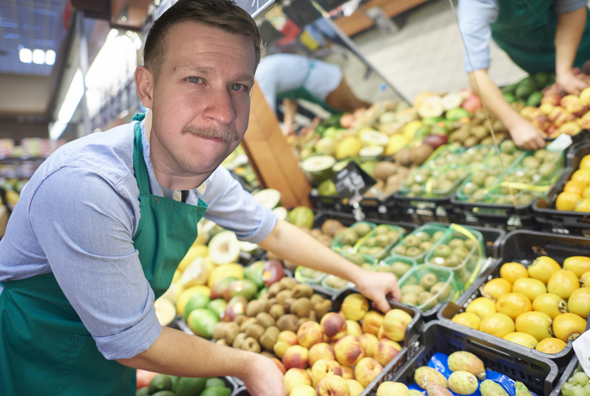

🎄 Weihnachtsgeschichte 2025 🎅🍭
1. Vorwort
Lieber Leser, du kannst dir die diesjährige Weihnachtsgeschichte entweder hier, digital im Internet zu Gemüte führen, oder aber dir die PDF herunterladen, die dann ausdrucken und ganz klassisch lesen. Wie immer gilt - wer Rechtschreibfehler findet, darf und muss für sie ein neues Zuhause finden.
Fröhliche Weihnachten und einen guten Rutsch ins neue Jahr!

2. Alle Jahre wieder?
Es ist wieder soweit, es ist Dezember und ich setze mich eines ruhigen Nachmittags hin und beginne zu tippen. Seit einigen Jahren ist das mein go-to Weihnachtsgeschenk. Doch dieses Jahr war, ich will nicht Lügen, schwer. Es war regelrecht erschöpfend, und ich habe immer wieder sehr an mir gezweifelt. Kaum rollt der Dezember heran, und ich spüre eine wilde Mischung, aus Vorfreude - mir wieder wilder Geschichten ausdenken zu dürfen - aber auch Angst und Stress und Druck. Und vorallem ist dieses allgemeine Gefühl der Niedergeschlagenheit, dass irgendwie über allem ein wenig liegt.
Mein Studium ist jetzt vorbei, im Januar steht nur noch die Verteidigung an und dann geht dieser Lebensabschnitt zu Ende. Die Jobsuche, ich glaube da muss ich Niemanden was erzählen, ist nicht das prickelnste Erlebnis das man sich wünschen könnte. Aber dann kommt auch ein leises aber nicht zu versteckendes Gefühl der Zuversicht auf. Wie wenn man im Winter, bei Nebel, durch den dunkelen Nachmittag nach Hause geht. Du hast ein kleines Teelicht in der Hand und es flackert ein wenig wegen der Feuchtigkeit in der Luft, aber keine Angst die Flamme ist zwar klein, aber auch stark! Du verbrennst die regelrecht die Pfoten an dem heißen Blech.
Und wenn du dann Zuhause angekommen bist, dann stellst du das Teelicht auf den Tisch und kleine Flamme erwandelt den Raum, die ganze Wohnung die das bequemste und wohligste was man sich vorstellen kann. Durch das Fenster sieht man Leute die selbst auf dem Heimweg sind, sie sind nocht nicht angekommen, du schon. Du lässt das Teelicht flackernd auf dem Wohnzimmertisch zurueck und begibst dich in die Küche, jetzt ist nicht die Zeit für halbe Sachen, also ergreifst du die Zutaten zu deinem Lieblingsgetränk, …, nein wirklich, ich warte hier auf dich, hol dir jetzt bitte dein Lieblingsgetränk!
Du hast deinen Kaffee/Tee/Bier/Matcha-Latte? Sehr gut, brav. Du platzierst also dich samt Getränk mit deinem Luxuskörper auf die Couch, freust dich über das wärmende Teelicht, und willst du gerade dein Smartphone zücken, da klopft es an der Tür.
"Klopf! Klopf!"
Das ist doppelt komisch, denn zum einen, ist die Wohnzimmertür nicht die Wohnungstür. Zum anderen klopft der Klopfer nicht mit der Hand, sondern mit der Stimme.
"Klopf! Klopf!", wiederholt sich Stimme.
Bedröbbelt setzt du dich auf dem Weg zur Wohnzimmertür. Vorsichtig drückst du die Klinke und ziehst die Tür langsam auf. Was dich davor erwartet WIRD DICH VERSTÖREN …
3. You got Mail
Vor deiner Wohnzimmertür steht widererwartens der Postbote. Ich hab dir hier mal ein Bild zur Veranschaulichung mitgebracht, man weiß ja heutzutage oft gar nicht mehr wie so Postboten aussehen. So zwischen Fax und SMS ist diese alterwürdige Institution fast ins Vergessen geraten. Was vielleicht auch erklärt warum Boris Träger der Briefträger sich einfach Zugang zu deiner Wohnung verschafft hat.
Mit einer amtlichen Seelenruhe, wie sie sonst nur einer Beamter an den Tag legen könnte lüftet er die Mütze und übergibt dir einen mit einer Schleife ersehenen Brief, den du zögerlich entgegen nimmst. Eure Blicke kreuzen sich. Boris schiebt die Mütze ein wenig nach oben und kratzt sich an Stirn. Du betrachtest die Wand hinter ihm. Der Gang führt zur Wohnungstür und damit nach draußen. Die Stille ist so dick, man könnte sie wie Nutella aufs Brot schmieren. Schließlich hällst du es nicht mehr aus.
"Kann ich Ihnen, noch was anbieten?", erkundigtst du dich unwillig.
Der Briefträger nimmt in einem Zug den Mütze ab, drückt sich an dir vorbei ins Wohnzimmer, und geht auf den Schnapsschrank zu.
"Eigentlich darf ich ja nichts annehmen, aber der Traditions geschuldet, ein kleinen trink ich", lässt er sich vernehmen.
Ohne dir etwas von deinem Schnaps anzubieten, lässt er sich am Esstisch nieder, stellt eine Flasche Zirbenbrandt, eine Flasche Korn und ein Flasche Williamsbirne vor sich auf. Dazu ein Schnaps glas. Er verköstigt direkt die erste Sorte Schnaps bis du überhaupt protestieren kannst. Als dir auffällt das du keinen der drei Schnäpse besonders vermissen würdest lässt du ihn gewähren.
Du inspizierst den Brief in deiner Hand. Na toll … dieser Simon hat dir wieder so eine Weihnachtsgeschichte geschickt! Du hörst ein gluckerndes Einschänken, gefolgt von einem schluckenden Geräusch, gefolgt von einem aaaaaaaah guad - dem Briefträger gehts gut. Flasche 1 ist halb leer.
Das Wohnzimmer ist gleichzeitig auch das Esszimmer weswegen der Schnappstrinker am Esstisch sitzt, während du dich auf die Couch mit zugehörigem Tisch niederlässt. Du nimmst einen Schluck on deinem inzwischen kalten Getränk. Jetzt legst du die Weihnachtsgeschichte auf den Tisch, neben das Teelicht, und bewegst dich in die Küche um dein Getränk zu erneuern. Als du zurück kommst hat der Postler mittlerweile einen anständigen Postler und die erste Flasche eignet sich noch als Behältnis für eine Flaschenpost. Du nimmst wieder platz, kuschelst dich in das weiche Sofa und beginnst dir die Weihnachtsgeschichte durchzulesen… was soll schon passieren?…
4. Auf Jobsuche
Die Weihnachtsgeschichte ist wie jedes Jahr ein wildes Kaudawelsch, ein unzusammenhängende Mischung aus kaum verständlichen Parabeln und als solche nicht erkenbare Rätsel. Du bist schon halb durch als es erneut klopft. Diese Mal ist es allerdings kein gesprochenes Klopfen sondern ein klassisches Fingerknöchelchen auf Holz. Bzw. Fingerknöchelchen auf Glas. Denn dein zweiter Besucher steht auch diese Mal nicht vor deiner Wohnungtür, auch nicht dahinter, sondern strahlt dich durch die gläsererne Balkontür an. In dickes Neopren gehüllt, steht selbstverständlich ein Taucher drausen auf deinem Balkon.
Du springst auf um den Taucher rein zu lassen, weil du bist ja höflich. Selbiger geht mit einem Moin direkt an dir vorbei. Bzw. er watschelt, denn er trägt ja Schwimmflossen. Verwirrt folgst du ihm, wann hat man schließlich schon mal einen waschechten Taucher im Hause. Der Taucher betritt dein Badezimmer, lässt die Tür aber hinter sich offen, daher folgst du ihm hinein. Drinen siehst du wie er sich gut gelaunt ein Bad ein lässt. Allerdings ohne den Stöpsel reinzumachen.
"Entschuldigen Sie, was machen sie denn da?", erkundigst du dich bei ihm.
"Perlentauchen", erklärt er dir nachsichtig.
"So, wird das aber nichts werden", wendest du zaghaft ein mit blick auf den fehlenden Stöpsel.
"Das wird schon, dauert halt ein bisschen", entgegnet er ganz der Fachmann.
"Und wie sind Sie dazu gekommen ein Perlentaucher zu werden?", willst du nun wissen.
"Ach wissen Sie, die Konjunktur gerade. Ich habe eigentlich einen Abschluss als Atomkraftwerkarchitekt, aber da konnte ich jetzt keinen Job finden. Also habe ich mich weitergebildet", erläutert er.
"Zum Perlentaucher?", ergänzt du fragend.
"Genau, zum Perlentaucher. Und jetzt bin ich Ihr man wenn es um Perlentauchen und oder Atomkraftwerke geht, Sie brauchen nicht zufällig ein neuese Atomkraftwerk?"
Du schüttelst den Kopf. Seufzend zieht er sich die Taucherbrille über. Er setzt sich auf den Rand der Wanne und lässt sich halb seitlich halb rücklings hineinfallen und zu deiner Überraschung verschwindet der Taucher im Schaum der halbvollen Badewanne, die sich weiterhin langsam füllt.
5. Der Glühweincode
Zurück im Wohnzimmer schickst du den Postbote dahin wo der Pfeffer wächst. Der macht sich auf den Weg lässt allerdings drei leere Flaschen als Waisen zurück. Du kannst noch keine merkbare Änderung in seinem Verhalten feststellen. Unschlüssig stehst du in der Tür. Eigentlich wolltest du noch Einkaufen gehen, aber in deinem Badezimmer ist ein Perlentaucher!
"Entschuldigen Sie, ich müsste noch Einkaufen gehen", beginnst du das Gespräch als du das Badezimmer begibst.
Der Taucher ist nirgends zu sehen. Doch dann plötzlich durchbricht schwarzer Stoff die Wasseroberfläche. Mühselig hält sich der Taucher an der Badewannenkante fest und lupft einen kleine Sack platschend darüber. Eine Handvoll Murmeln, nein Perlen(!) kullern auf den nassen Badezimmerboden. Du greifst nach dem Arm des Tauchers und hilfst ihm aus der Wanne.
"Kein Problem, ich bin für heute fertig. Das nächste mal komm erst wieder nach den Feiertagen", erwiedert der Taucher deinen vorherigen Gesprächsbeginn.
Auf dem Weg zum Supermarkt überlegst du wo es hin gehen soll. Edeka? Rewe? Dann gehst du doch zu Netto! Der Supermarkt ist voll wie am Tag vor der Alieninvasion. Du möchtest Plätzchen backen. Eigentlich wolltest du mit deiner Freundin Beate Plätzchen backen. Aber die doofe Kuh musste ja eine Kreuzfahrt nach Ägypten gewinnen. Also wirst du jetzt alleine Plätzchen backen. Ja, ja das ist nicht gegen das Gesetz. Und die wichtigste Zutat zum Plätzchen backen ist wie jeder weiß - Glühwein. Als du am Glühweinregal stehst, musst du jedoch zu deinem Schreck feststellen, dass es keinen mehr gibt! Unschluessig - tippelst du von links nach rechts. Was willst du tun?
Der Supermarktmitarbeiter Espunkt steuert auf dich zu. Ob er dir helfen könne. Du schaust dir den Vogel erstmal etwas an.

Nun gut. Es gibt keinen Glühwein mehr, also muss du Glühwein selber machen. Auf zum Alkoholbereich! Du drückst dem Verkäufer deinen Korb und deine Einfkaufsliste in die Hände und googlest nach einem Glühweinrezept. In den Untiefen des Internets findest du das einzige Rezept, dass weder mit Werbung voll geklatscht ist noch die Lebensgeschichte des Hundes, der Tochter, der Schwester der Rezeptautorin erörtert.
| Zutaten |
|---|
| Spätburgunderwein (Süß) |
| Nelken |
| Sternanis |
| Ingwer |
| Stangenzimt |
| Kardamom |
| Obstronen oder Zitranjen (wejeils in BIO wegen der Schale) |
| Optional: |
| Eventuell Zucker falls es keinen süßen Wein gibt |
| Schuss (Schnapes) |
Zubereitung: Alles langsam erwärmen und nicht kochen sondern nur ziehenlassen, wir machen Glühwein, keine Nudeln! Mit Zucker auf den gewünschten Grade der Süße bringen und gegebenfalls mit einem Schuss Schnaps veredenl. Den Glühwein anschließend abgießen und vor dem Kamin und Bärenfell genießen.
"Was denkst du, reicht das für den Glühwein?", frägst du Espunkt.
"Bestimmt … dann zur Kasse?", erwiedert er hoffnunsvoll.
Du lässt die Hoffnung platzen wie andere ihre Versprechen mit dir Plätzchen zu backen. Als nächstes brauchst du die Zutaten für deine Salted-caramel Plätzchen!
| Zutaten |
|---|
| 170gr Zucker (100gr fürs Karamell + 70gr für den Teig) |
| 100ml Sahne (30% fett) |
| 225gr Butter (25gr fürs Karamell + 200gr für den Teig) |
| 250gr Mehl |
| 1prise Salz |
| 2Eigelb |
| 50gr gemahlen Nüsse |
| 150gr Zartbitter Kuvertüre |
| Gehackte Nüsse zum Garnieren |
Der Supermarktmensch hechelt keuchend hinter dir her. Eigentlich hatte er dir nur den Weg zeigen wollen, war dann aber so überrumpelt dass er jetzt deinen ganzen Einkauf trägt.
"Haben wir jetzt alles?", erkundigt er sich
Lächelnd bestätigst du selbiges.
"Ich habe ein gute und eine schlechte Nachricht"
Bei dir Zuhause angekommen, zeigst du dem Supermarktman wo die Küchengeräte sind. Er hat die ehrenvolle Aufgabe jetzt zu lernen wie man Karamell macht! Man könnte sagen, dass dein Umgang mit dem Netto mitarbeiter vielleicht ein bisschen übertrieben ist - aber schließlich ist der Kunde ja König, oder?
Zuerst stellt man einen großen Topf oder eine Pfanne auf den Herd und gibt den Zucker hinein. Auf niedriger Stufe betrachtet man sein Spiegelbild im Zucker und denkt über das vergangene Jahr nach. Es dauert ein bisschen, aber schließlich stellt man fest, dass es immer noch ein bisschen dauert. Trotzdem, sicherheitshalber hält man die abgewogene butter und Sahne bereit. Irgendwann, beginnt der Zucker zu schmelzen! Wenn der Zucker vollständig geschmolzen ist, dann rührt man mit einem Holzlöffel die Butter ein. Und danach unter ständigen Rühren kommt die Sahne dazu. Vor der ganzen Prozedur muss man eine Münze werfen. Bei Kopf weiß man das Karamell wird verklumpen. Bei Zahl, klappt es vielleicht. Wenn man unter ständigen Rühren eine cremige, Karamellmasse hinbekommen hat, gibt man die Prise Salz hinzu und feiert mit einer Tasse Glühwein. Im Anschluss macht man den teig oder whatever der Prozess ist nicht so spannend. Finally beißt man in den triumphalen Genuss und schickt den Supermarktmitarbeiter zurück in die Arbeit.
6. Der Sockengnome
Ärgerlich klaubst du feuchte, aber duftende Wäsche aus der Machine. Das automatische Trockenprogramm funktioniert schon wieder nicht, und jetzt musst du kalte, glitschige Kleidung den Korb schaufeln. Mit spitzen Fingern greifst du nach dem linken Socken deines Lieblingspaars. Die Socke ist auffällig bunt, mit einem lustigen Muster. Dann kommt noch ein Tshirt. Eine Hose. Und nix mehr? Wo ist denn die andere Socke? Panisch tastest du den gesamten Innenbereich der Trommel ab. Kalt, löchrig, metalisch. An den typischen Stellen wo sich Kleidung gern mal verhädert ist aber nichts zu finden. Du drehst die Trommel, vielleicht löst das ja was, aber nein, die Socke ist weg! Hast du vielleicht nur eine der beiden Socken in die Maschine geworfen? Nachdenklich kratzt du dich an der Stirn.
Auf dem Weg zurück von der Wäscheleine rätzels du immer noch über die vermisste Socke. Das ist deine Lieblingssocke! Aber wo könnte sie sein? Vielleicht unter der Couch? Hast du deine Socken, nach einem langen anstrengenden Tag, ausgezogen und dann versehentlich unter die Couch geschoben? Du musst unvermittelt nachsehen. Unter der Couch lukt eine andere Socke hervor und darunter ist die dazugehörige zweite. Angewiedert klatscht du die Kleidung in den leeren Wäschekorb in deinen Armen. Aber wo könnte sie denn sonst sein? Du gehst im Kopf nochmal alle Schritte durch die du seit dem letzten Tragen - aber nein. Es ist einfach zu schwammig in deinem Kopf. Hast du sie am Mittwoch getragen? Oder am Donnerstag? Kein Chance. Seufzend, stellst du den fast leeren Wäschekorb in Bad auf die Waschmaschine und verlässt den Raum.
Am Abend hast du das Sockengate schon wieder fast vergessen. Als du zum Schlafengehen das heutige Paar ausziehen willst versetzt es dir jedoch einen Stich ins Herz. Trotzig lässt du die Socken an! Betrübt fällst du in einen unruhigen Schlaf. In deinem Traum liegst du auf einer wunderschönen Blumenwiese. Die Sonne kitzelt dich am Bauchnabel, denn dein Shirt ist nach oben gerutscht um deinen prächtigen Bierbauch zur Schau zu stellen. Mit dem nackten Fuß nimmst du Grashalme zwischen die Zehen. Dann beginnst du Blumen mit dem Fuß zu pflücken. Das Leben könnte so schön sein. Ein kleiner Hase hoppelt auf dich zu. Er mümmelt mit der Nase beginnt an dem Klee zwischen deinen Zehen zu kauen. Du ziehst den Fuß weg. Er hoppelt hinterher. Erneut zupft das Tier an deinem Zehenklee. Langsam wir das echt nervig. Schuu! Such dir deinen Eigenen! Versucht du ihn zu vertreiben. Der Hase ist aber nicht abzuschütteln und so kommt es wie es kommen muss. Du ziehst den Fuß nicht schnell genug weg und das Mistviech beißt dich in den Zeh.
"Aua!", schimpfst du als der Schmerz dich aus dem Schlaf reißt.
Im Dunkelen deines Zimmers dauert es einen Augenblick bis sich deine Augen ein Bild von der Situation machen, aber dann bist du sofort hell wach! Am Ende deines Betts steht ein kleiner Mann. In der linken deine eine Socke, die andere Hand an deinem noch besockten Fuß. Er ist in der Bewegung eingefroren, wie ein wildes Tier. Blitzschnell greiftst du dein Smartphone, und schießt ein grelles Foto. Der kleine Wicht mit seiner roten Mütze und langem Zwergenbart taumelt überrumpelt nach hinten und fällt auf den Hintern.
"Sie haben mir ins Gesicht gefilmt! Das dürfen Sie nicht!", beschwert sich der Gnom am Boden.
Du blickst auf die Socke, die er immer noch fest umklammert hat und auf deinen nackten rechten Fuß. Dann fällt es dir wie Schuppen von den Augen. Du springst auf, zur Tür und schaltest das Licht an. Der kleine Mann stöhnt mit schmerzhaft zusammen gekniffenen Augen.
"Du hast meine Lieblingssocke geklaut", knurrst du zwischen zusammen gebissenen Zähnen.
Der Gnom rappelt sich langsam auf und hebt beschwischwichtigend die Arme, in der einen Hand immer noch deine Socke. Dann lässt er langsam die Arme sinken, und zack er läuft los. Doch du bist schneller, als er sich an dir vorbei winseln will stellst du ihm unsanft ein Bein. Er stürzt und wirfst dich auf ihn.
"Wo ist meine Socke!", schreist du etwas zu involviert.
"Okay, okay! Ich geb auf! Lass mich aufstehen, dann erklär ich dir alles", bettelt der Gnom unter dir.
Du sitzt am Küchentisch und vor dir steht der Gnom. Er hat sich von dir einen sehr unpassendes Sako und eine viel zu lange Krawatte ausgeliehen. Neben ihm steht ein Flipchart. Mit einem Esstäbchen deutet er darauf herum und erklärt dir sein Geschäftsmodell
"Also, es ist ganz einfach! Der erste Schritt ist, ich stehle die Socken.", beginnt er die Präsentation. "Der zweite Schritt ist", fügt er hinzu und nimmt dann einen tiefen Schluck Wasser aus dem Glas. "Und der dritte Schirtt - Profit!", schließt er.
Du blickst ihn an. Dann frägst du nach.
"Wie war nochmal der 2. Schritt?"
Er nickt freundlich und beginnt wieder auf dem Flipchart herum zu deuten.
"Also, der erste Schritt ist, ich stehle die Socken. Der zweite Schritt ist", dieses murmelt er irgendwas so leise das du es nicht verstehst, "Und der dritte Schirtt - Profit!"
"Kann ich wenigstens meine Lieblingssocke zurück haben", beendest du seufzend seinen Pitch.
7. St. Nick
Es ist fast schon Weihnachten! Du sitzt schon wieder Zuhause, und
erfreust dich am Schein des Advenstkranzes. Wegen des Schildes an
selbigen hast du ihn dir gekauft - da steht Reduziert. Als du in
deinen Vorratskeller gehst, siehst du voll Schreck, dass sich das
Bier die Schokolade(Jugendschutzhinweise) dem Ende nähert! Wie von
der Tarantel gestochen springst du auf, ziehst dir was annehmbares
an und stürmst auf dein Kraftfahrzeug zu. Du steigst ein. Du drehst
den Schlüssel im Loch. Ja das ist noch so ein vorsintflutartiges
altes get off my back! Das Auto hört sich an wie ein Italiener
"Si! Si! Siiiiiiii … No", und springt nicht an.
Dann orgelst du das Zündschloss noch einmal, dieses mal klingt es wie ein Franzose
"Oui! Oui! Oui! Ouuuuuuuuuuui … Non", und sprint wiederum nicht an.
Genervt versuchst du es noch ein letztes Mal. Kupplung, Schlüssel, zack und Ratatatata die Karre läuft! Schnell ohne zu schauen legst du den Rückwärtsgang ein, lässt die Kupplung kommen, gibst Gas und drehst dich erst dann um. Augenblicke später, hörst du einen Schrei, einen Aufprall und machst eine Vollbremmsung. Du springst aus dem Auto und nach hinten. Halb unter deinem Gefährt, halb am Kofferaumdeckel hängend, zettert dich ein Mann in roten Mantel an. Er ist sehr alt, was man an seinem langen weißen Bart erkennt. Außerdem hat er einen abgebrochene Bischofsstab und einen Sack voll Nüssen dabei. Entsetzt eilst du wieder ins Auto um von ihm runter zu fahren. Leider ist immer noch der Rückwärtsgang drin, was bei erneutem Anfahren mit einem lauten Zettern quittiert wird. Schließlich bist du aber vom Nikolaus runter gefahren und hilfst ihm auf.
Zurück in der Wohnung sitzt der Heilige auf deiner Couch, die Füße in einem Warmen Fußbad, der Kopf mit einem Verband umwickelt. Du machst dir echt Sorgen, denn seit du ihn überfahren hast hat er noch nicht einen vollständigen Satz gesprochen. Es kommt nur unverständliches Gebrabbel aus seinem Mund. Du flöst ihm etwas von dem Glühwein ein, gibst ihm ein leckeres Plätzchen, nichts hilft. Schließlich rufst du die Telefonseelsorge an.
"Hallo? Hallo, ich glaube ich habe den Weihnachtsmann kaputt gemacht?", beginnst du das Gespräch.
Auf der anderen Seite kommt nur ein wütendes Gemurmle zurück, dass das nicht Weihnachtsmann sondern Nikolaus hieße! Und dass der Weihnachtsmann eine Erfindung von den Preisen aus Amerika sei oder so ähnlich. Jedenfalls legst du ziemlich schnell auf, als du merkst wie sinnlos das Gespräch ist.
So, was machen wir jetzt? Der Nikolaus sitzt völlig verwirrt auf der Couch, wer soll denn jetzt das Weihnachtfest retten? Du siehst dich schon von Dach zu Dach schwingen wie Spiderman. Durch den Kamin hinunter rutschen um Freude und Nüsse zu allen zu bringen. Doch dann klingelt es an deiner Tür
Vor der Tür steht ein Mann in der Kleidung eines Pflegers. Lächelnd nickt er erst dir und dann seinen Kollegen zu, die an dir vorbei in die Wohnung gehen. Wenig später führen sie den Nikolaus aus der Wohnung. St. Nick oder besser Stefanus Nickolopulus ist ein griechisch stämmiger ehemaliger Universitätsprofessor der Zahlentheorie, der leider etwas an geistiger Verwirrung leidet - Berufsrisiko. Jedes Jahr zu Weihnachten glaubt er der heilige Nikolaus zu sein und versucht aus der Pflegeanstallt auszubrechnen. Während der Pfleger dir das alles erklärt fällt dir ein riesen Stein vom Herzen.
"Und ich dachte schon ich muss für ihn einspringen, und in einer Nacht allen Kindern Geschenke bringen", lachst du befreit.
8. Nachwort
Am heiligen Abend, ist Beate immer noch nicht aus Ägypten zurück - ein Schiffblockiert mal wieder den Suezkanal. Deine Familie kann dich nicht besuchen, weil eine Schneeflocke das Gleisbett berührt hat und deswegen der Bahnverkehr blockiert ist.
Aber du bist trotzdem nicht alleine! Zu Besuch sind der saufende Postbote, der Perlentaucher, der Nettomitarbeiter, der Sockengnom und Pfleger Ede samt Nikolaus. Der dampfende Endenbraten riecht vorzüglich, das Kraut und die Knödel lassen das Wasser im Mund zusammen laufen.
Es ist perfekt, aber wer diese Weihnachtsgeschichten seit Beginn mit verfolgt, der weiß dass alles irgendwann mal mit Goethes Faust und dem Teufel begann. Seitdem hat Mephisto, oder auch Mephi wie er eigentlich genannt werden möchte, eigentlich immer einen Cameo in der Weihnachtsgeschichte gehabt. So auch dieses mal. Zur 12stunde hört man eine angestrengentes Schnauben aus dem Kamin. Asche rieselt herunter und ein Ziegenfuß bahnt sich den Weg nach unten. Mit einer tiefen Stimme, und schwer hustend präsentiert er uns sein Geschenk - das neueste iPhone wie immer mit dem deal Smartphone gegen Seele.
So jetzt hoffe ich, dass ihr brav die Plätzchen nachgebacken und den Glühwein nach gekocht habt und dass ihr euch eine schöne, besinnliche Weihnachtszeit macht.
Fröhliche Weihnachten